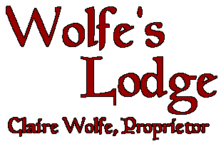

|
 |
NEWS! After two years of hiding out (and not updating Wolfe's Lodge), I'm coming back. Well, sort of. I'm still hiding out. I like it that way. But by Fall 2001, I hope to have the Lodge refurbished with updated material. In the meantime, there are five places you can read new work from me. They are:
- Backwoods Home Magazine. Articles on the theme of Living the Outlaw Life appear in the bi-monthly print 'zine and on the Web site.
- Sierra Times. New Hardyville columns appear monthly in the Members-Only section.
- My new book, Think Free to Live Free: The Political Burnout's Guide to Life, Activism and Everything. It's published by Breakout Productions and available from Breakout's parent company Loompanics Unlimited.
- The Claire Files. I discovered this site a couple of months back and was just bowled over. It's owned by a young woman named Debra Ricketts, and she has more of my work on her site than I do on this one. Among other things, she's got the only known archive of WorldNetDaily "Hardyville" columns. (She now has authorization to use copyrighted columns and graphics that are otherwise not to be reproduced, please.)
- (And soon) the book I'm co-writing with Aaron Zelman of Jews for the Preservation of Firearms Ownership. It's called The State vs. the People: The Rise of the American Police State. Visit the The JPFO Web site to watch for its publication date.
In the meantime, here's the Lodge and all its writers-in-residence for your pleasure ...
| Claire's Books 101 Things to Do 'Til the Revolution, I Am Not a Number! and Don't Shoot the Bastards (Yet) | Claire's Serious Articles From both the underground and the "respectable" press. |
| Claire's Silly Stuff Sometimes ya gotta laugh or go nuts. | Patricia Neill The most passionate, and often the funniest, writer on the Internet. |
| Writings by Other Friends of Liberty Sometimes serious, sometimes funny, always with a commitment to freedom. | More From those Friends! They wrote so much good stuff we had to put the older pieces into a separate archive. |
| Buy Books from Amazon.com Claire's books, lots of others' books. Eclectic choices. Buy books here and earn Wolfe's Lodge The MegaBucks. | Book and Movie Reviews |
| Fiction and Poetry By live guys and dead ones. | Sound-Offs "Sound-Off" used to be a regular feature of the Lodge. Now we're just archiving these short opinion pieces for your reading pleasure. |
| The Den Personal ruminations from Claire: Closed for remodeling. Re-opening date unknown | Links Travel the World! |
Wolfe's Lodge
is dedicated to the writings of Claire Wolfe, Patricia Neill and other lovers of liberty. It is also dedicated to all people who choose to be free, rather than wait for others to free them.
| Join the Orange Ribbon No National ID campaign! Click to find out more. | |
Make your Web page a Bill of Rights Enforcement site! Click to find out more. |
NOTE TO FEDERAL AGENTS: If you're just digging for dirt, please read this. If you're a real person who cares about freedom, Stay and be welcome! I hope you enjoy our work.
| Running Wolf Logo was rendered by Michael Haggard. Thanks Michael! |
Banners courtesy of
|
Wolfe's Lodge has had
Copyright Notice -
The documents distributed by this server have been provided by the contributing authors as a means to ensure dissemination of their work on a noncommercial basis. Copyright and all rights therein are maintained by the authors of these documents or by other copyright holders, notwithstanding that they have offered their works here electronically. It is understood that all persons copying this information will adhere to the terms and constraints invoked by each author's copyright.